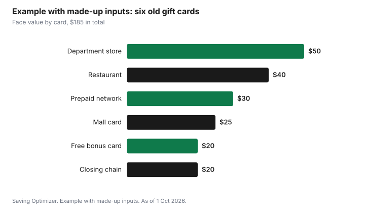

Events · Canada
Gift Card Rules in Canada: Expiry Dates and Fees by Province
In most Canadian provinces, an ordinary store gift card bought with money cannot expire. Ontario, Quebec, British Columbia, Alberta, Manitoba, Saskatchewan, Nova Scotia, New Brunswick and Prince Edward Island all have rules that ban expiry dates on most retail gift cards and limit the fees a seller can charge. The protection has gaps, though. Promotional cards you got for free, charity cards, cards for one specific service, and prepaid cards from financial institutions are often treated differently, and shopping mall cards can carry activation and dormancy fees in Ontario, Quebec and New Brunswick. Read the back of the card, keep the receipt, and spend cards from shaky retailers soon.
Key takeaways
- Ontario: most retail gift cards can't expire, and activation, service and dormancy fees are banned. Shopping mall cards are the exception on fees.
- Quebec: cash-like gift cards can't expire, and a balance of $5 or less must be refunded on request (not for financial-institution cards).
- B.C., Alberta, Manitoba, Saskatchewan, Nova Scotia, New Brunswick and P.E.I. also ban expiry on most cards bought for money.
- Common exceptions: free promotional cards, charity cards, cards for one specific good or service, and prepaid credit cards.
- If a retailer goes bankrupt, a gift card can be hard to use. Spend cards from struggling stores first.
- Example with made-up inputs: a drawer of six old cards worth $185 on paper can be sorted into spend now, check fees and check terms.
The short answer by province
Each province writes its own consumer protection law, so the details differ. This table summarizes the rule for an ordinary retail gift card that someone paid money for. The exceptions follow in the next sections.
| Province | Can an ordinary retail card expire? | Fees on ordinary retail cards |
|---|---|---|
| Ontario | No | No activation, service or dormancy fees. Customization and lost or stolen replacement fees are allowed |
| Quebec | No (rule in effect since 30 June 2010) | Fees allowed only on financial-institution cards and mall or regional cards |
| British Columbia | No | See Consumer Protection BC; exceptions listed below |
| Alberta | No; expiry dates on or after 1 Nov 2008 are void | A one-time purchase fee, replacement and customization fees. No dormancy fees |
| Manitoba | No (in force 1 Nov 2007) | Only replacement and customization fees; no inactivity fees |
| Saskatchewan | No (applies from 10 Nov 2008) | No extra fees; customization and replacement fees allowed |
| Nova Scotia | No (regulations effective 1 Feb 2010) | Only replacement and customization fees on ordinary cards |
| New Brunswick | No (cards bought on or after 18 June 2008) | Customization, replacement, and a dormancy fee in limited cases |
| Prince Edward Island | No (in force 1 Sep 2010) | Replacement and customization fees |
| Newfoundland and Labrador | Not confirmed here | Check with the province's consumer affairs office |
Territories and Newfoundland and Labrador are not summarized here because a current official page was not confirmed. If you live there, read the card's terms and ask the retailer directly.
Ontario's rules on expiry and fees
Ontario's consumer page says most gift cards sold in the province cannot have an expiry date. Sellers cannot charge activation fees, service fees or dormancy fees on those cards. They can charge a fee to customize a card, for example with a photo or a personal message, and a fee to replace a lost or stolen card.
The Ontario rules do not cover every card with a balance on it. Loyalty and club cards are not covered, and neither are prepaid credit cards, the kind with a payment network logo that work in many stores. Those follow the issuer's terms, and fees are common. Ontario also lists cards that can expire: a card for one specific service, such as a single spa treatment, and a card sold by a charity.
Shopping mall cards in Ontario
A mall card that works in many stores in one shopping centre is the main exception on fees. Ontario allows an activation fee of up to $1.50. The value must be kept for 15 months. After that, a dormancy fee of up to $2.50 a month can be charged. During the 15th month you can ask for a three-month extension. If you were charged an illegal fee on a mall card, Ontario says it must be refunded within 15 days, and a mall card stays valid at the other stores if one store closes.
| Item | Ontario rule for shopping mall cards |
|---|---|
| Activation fee | Up to $1.50 |
| Period with no dormancy fee | 15 months |
| Dormancy fee after that | Up to $2.50 a month |
| Extension | You can request 3 more months during the 15th month |
| Illegal fee charged | Must be refunded within 15 days |
| One store closes | Card stays valid at the other stores |
Quebec
Quebec's Office de la protection du consommateur says a gift card that works like money cannot have an expiry date or a time limit, a rule in effect since 30 June 2010. Fees are allowed only on two kinds of cards: cards from financial institutions, and mall or regional cards that work in many stores. On a mall card, the seller can charge either a fee of $3.50 when the card is issued, or $2.50 a month from the 15th month if the card is unused. If you ask for an extension before the end of the 14th month, the monthly fee starts after the 18th month instead.
Two Quebec rules are worth knowing at the till. If the merchant requires a card to be replaced, replacement is free. And if your remaining balance is $5 or less, the merchant must refund it on request. The small-balance refund does not apply to financial-institution cards.
Western provinces
British Columbia
Consumer Protection BC says a gift card with a dollar value cannot expire. Under the province's Prepaid Purchase Cards Regulation, the exceptions are cards for a specific good or service, discounted or promotional cards, charity cards, and cards bought before 2009. Store credit given for a return is not a gift card under these rules, so its terms can differ.
Alberta
Alberta's gift card page says cards cannot expire, and expiry dates on cards issued on or after 1 November 2008 are void. Sellers can charge a one-time purchase fee, a replacement fee and a customization fee, but no dormancy fees. Cards issued by financial institutions are treated differently and can have expiry dates and fees. Alberta lists penalties for breaking the rules of up to $300,000 and up to two years in jail.
Manitoba and Saskatchewan
Manitoba's rules, in force since 1 November 2007, ban expiry dates except on cards for a specific good or service and on cards where nothing of value was exchanged, such as promotional, charitable or loyalty cards. Only replacement and customization fees are allowed, and inactivity fees are not. Saskatchewan's Financial and Consumer Affairs Authority says cards cannot expire or carry extra fees, except charitable cards and cards where nothing of value was given. Customization and replacement fees are allowed. The rules apply from 10 November 2008.
Atlantic provinces
Nova Scotia's Gift Card Regulations, effective 1 February 2010, ban expiry except on charitable and promotional cards. Fees are allowed only on those cards, plus replacement and customization fees, and any expiry date or fee must be disclosed on the card.
New Brunswick's Financial and Consumer Services Commission says cards bought on or after 18 June 2008 cannot expire, except cards for a specific good or service, charitable cards and promotional cards. Fees are allowed only for customization, replacement and dormancy. The dormancy fee is up to $2.50 a month after 15 months of inactivity, and you can ask for a three-month extension.
Prince Edward Island's Gift Cards Act regulations, in force since 1 September 2010, allow expiry dates only on charitable cards, cards for a specific good or service, and promotional cards. Fees are limited to those cards, plus replacement and customization fees.
The exceptions that cost people money
The no-expiry rules protect money you or a gift-giver paid. They usually do not protect value you got for free. Most lost value comes from four kinds of cards.
| Card type | Example | Why it matters |
|---|---|---|
| Promotional or bonus cards | A $10 bonus card with a $50 purchase | Often can expire; check the date on the card |
| Single good or service | A card for one massage or one car wash | Can expire in several provinces |
| Charity cards | A card sold to raise money for a charity | Expiry and fees often allowed |
| Prepaid credit cards and financial-institution cards | A network-branded prepaid card | Follow the issuer's terms; fees and expiry are possible |
| Loyalty and club cards | Points cards | Not gift cards under Ontario's rules |
A bonus card is the one to watch at holiday time. Many stores give a free card with a purchase in November and December. If it has a short window, put the date in your phone calendar the day you get it.
What to do with old gift cards
- Gather every card into one place, including cards in wallets, drawers and email inboxes.
- Check each balance on the retailer's website or receipt, or ask at the till.
- Sort them: spend now (any card with an expiry date or a struggling retailer), check fees (mall and prepaid cards) and keep (ordinary retail cards in good standing).
- Write the balance on a sticky note on each card or in a phone note.
- Use small leftover balances first. In Quebec, ask for a refund if $5 or less remains.
- If you will never use a card, give it to someone who will or use it for a gift on your list.
The adult holiday gift budget shows how to use cards you already have against your list before buying new gifts.
Retailer bankruptcy risk
No province can force a closed business to honour a card it cannot pay for. Ontario's page says that if a business goes bankrupt, you can contact the trustee handling the bankruptcy, but there is no guarantee of getting the value back. The practical rule is simple: if a store is closing locations or in the news for financial trouble, spend its cards first. Do not buy a large card from a store you are unsure about.
Example with made-up inputs: sorting a drawer of cards
These numbers are an example with made-up inputs. Someone finds six cards with a total face value of $185: a $50 department store card, a $40 restaurant card, a $25 mall card bought 20 months ago, a $30 prepaid network card, a $20 free bonus card from last December, and a $20 card from a chain that has been closing stores.
| Card | Face value | Action |
|---|---|---|
| Department store card | $50 | Keep; no expiry on an ordinary retail card |
| Restaurant card | $40 | Keep; use at the next family dinner out |
| Mall card, 20 months old | $25 | Check the balance for dormancy fees and spend now |
| Prepaid network card | $30 | Read the issuer's terms; spend soon |
| Free bonus card | $20 | Check the date; it may already have expired |
| Card from a closing chain | $20 | Spend this week |

Checklist before you buy or give a gift card
- Choose a card from a store the person already uses.
- Prefer an ordinary store card over a mall or prepaid network card when fees are a concern.
- Keep the receipt and write down the card number in case it is lost.
- Check whether a bonus card has an expiry date.
- Tell the recipient where the card was bought and how to check the balance.
- Avoid large cards from retailers in financial trouble.
For returns and exchanges of gifts that came with a gift receipt, see clothing gifts, gift cards and exchanges and holiday return windows.
Sources
- Government of Ontario, Buying or using gift cards, ontario.ca, page updated 14 Aug 2026, as of 1 Oct 2026. No expiry on most cards; banned fees; mall card $1.50 activation, 15 months, $2.50 monthly dormancy, 3-month extension, 15-day refund; exclusions; bankruptcy trustee.
- Office de la protection du consommateur (Quebec), gift card pages, as of 1 Oct 2026. No expiry since 30 June 2010; fees on financial-institution and mall cards ($3.50 at issue or $2.50 a month from month 15; month 18 with extension); free replacement; $5 balance refund.
- Consumer Protection BC, gift cards, and B.C. Prepaid Purchase Cards Regulation, as of 1 Oct 2026.
- Government of Alberta, Gift cards, alberta.ca, as of 1 Oct 2026. No expiry; void dates from 1 Nov 2008; allowed fees; financial-institution cards; penalties.
- Manitoba Consumer Protection Office, gift card FAQ, as of 1 Oct 2026. In force 1 Nov 2007; exceptions; allowed fees.
- Saskatchewan Financial and Consumer Affairs Authority, gift cards, as of 1 Oct 2026. Applies from 10 Nov 2008.
- Nova Scotia Gift Card Regulations, N.S. Reg. 325/2009, as of 1 Oct 2026. Effective 1 Feb 2010.
- Financial and Consumer Services Commission (New Brunswick), gift cards, as of 1 Oct 2026. Cards bought on or after 18 June 2008; dormancy fee after 15 months.
- Prince Edward Island Gift Cards Act General Regulations, as of 1 Oct 2026. In force 1 Sep 2010.
- The six cards, their balances and the chart are an example with made-up inputs.
Frequently asked questions
Can a gift card expire in Canada?
In Ontario, Quebec, British Columbia, Alberta, Manitoba, Saskatchewan, Nova Scotia, New Brunswick and Prince Edward Island, an ordinary retail gift card bought with money generally cannot expire. Exceptions vary by province and often include promotional cards, charity cards and cards for one specific good or service.
Can a store charge a dormancy fee on a gift card in Ontario?
Not on most retail gift cards. Ontario bans activation, service and dormancy fees on them. Shopping mall cards are the exception: they can charge up to $1.50 to activate and up to $2.50 a month after 15 months, and you can request a three-month extension in the 15th month.
Can I get cash for a small gift card balance?
In Quebec, a merchant must refund a balance of $5 or less on request, except on financial-institution cards. Other provinces covered here do not list a similar rule, so ask the retailer.
Are prepaid credit cards covered by gift card laws?
Ontario's rules do not cover prepaid credit cards, and Alberta and Quebec treat financial-institution cards differently. Those cards follow the issuer's terms, which can include fees and expiry dates.
What happens to my gift card if the store goes bankrupt?
Ontario says you can contact the bankruptcy trustee, but recovery is not guaranteed. Spend cards from struggling retailers first and avoid buying large cards from them.
Researched and drafted with AI assistance and fact-checked against official Canadian sources. How we create content.
Disclosure: Saving Optimizer may earn a commission if a partner link is added later, such as a gift card or cash-back offer type. No partnership is claimed on this page, and no store or card is ranked. Education only. This is not legal advice; read your province's rules and the card's terms.